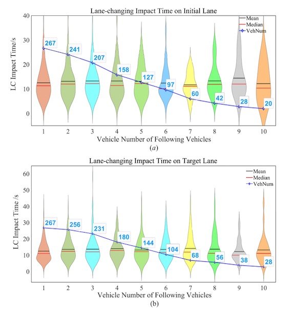
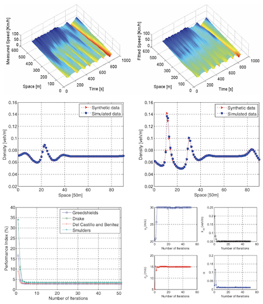
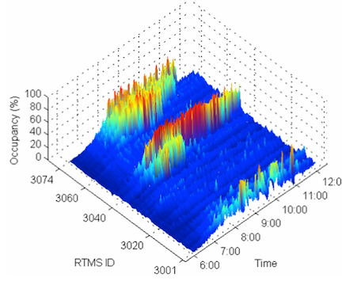

Understanding Traffic Dynamics: Microscopic Modeling
Overview
Microscopic traffic flow modeling is essential for linking individual driving behaviors with system-level traffic performance. Traffic stability, safety, congestion, fundamental diagrams, shockwave propagation, and network-level hysteresis all emerge from local interactions involving car-following, lane-changing, perception, reaction, and heterogeneous driving decisions. Microscopic models therefore provide the foundation for explaining how local driving mechanisms shape aggregate traffic dynamics.

Together, my team’s studies establish a multi-scale account of traffic dynamics: from perception and heterogeneous driving behavior to maneuver-induced disturbances, stochastic behavioral regimes, and network-level traffic phenomena.
- In our early work, we proposed a visual imaging car-following model, showing that drivers’ visual perception of the preceding vehicle can better explain following behavior and traffic stability, especially under different vehicle-type conditions[5].
- We then examined vehicle-type-dependent car-following heterogeneity from both microscopic and macroscopic viewpoints, demonstrating that larger vehicles lead drivers to maintain lower-risk and larger-spacing behavior[4].
- To connect microscopic behavior with aggregate traffic flow characteristics, we developed a flexible traffic stream model that links reaction time, calmness, and sensitivity with macroscopic fundamental diagrams and shockwave dynamics[3].
- We also derived an anisotropic continuum model directly from car-following behavior and showed its capability to reproduce real congestion waves[6].
- Extending the focus from car-following to lane-changing, we quantified the temporal and spatial impact of a single discretionary lane change, finding that it typically affects four surrounding vehicles for about 12 seconds[1].
- More recently, we incorporated stochasticity, driver heterogeneity, and time-varying behavioral regimes into Bayesian car-following models, showing that stochastic multi-regime representations reproduce human driving dynamics more faithfully than deterministic models[2].
- At the network scale, we identified a figure-eight hysteresis pattern in the macroscopic fundamental diagram and traced its microscopic causes to location-specific flow–occupancy states and different lane-changing rates, demonstrating how local maneuvers and spatial traffic heterogeneity shape aggregate network dynamics[7].
Publications




